14 Chapter 14 — Multi-Camera Geometry, Line Calls, 3D Reconstruction
Why line calls are 3D measurements, how triangulation works, and the cost ladder that makes it real
14.1 The Officiating Problem: 66mm vs 50.8mm
Chapter 6 proved the Z-limit: a 2D homography cannot localize the ball, because the ball is above the plane. Chapter 4 measured the parallax: a single elevated camera sees a 0.9m-high object with a 66mm projection offset. The pickleball line is 50.8mm (2 inches) wide. That arithmetic is the whole problem: a single camera's bias exceeds the line's own width. Line calls are a 3D measurement or an opinion. This chapter is the 3D measurement — and the honest cost ladder for building it.
It is worth stating exactly what a line call is, because both of this book's sports hide the same trap inside different rules language. In pickleball a ball is in if any part of its contact patch touches the line. The ball has radius 37mm and compresses against a hard court for roughly 5ms at contact [verify]; the contact point sits one radius directly below the ball center. From the 4.5m elevated rig, that one-radius vertical offset projects onto the court as $\Delta \approx rD/H$ — the measured 66mm at the far sideline. A single camera therefore cannot distinguish "ball bounced on the line" from "ball 37mm above the line one frame before contact," because the two hypotheses are pixel-identical. Products that call lines from one view resolve the ambiguity with learned priors — bounce-frame classifiers, trajectory extrapolation — which is estimation, not measurement.
Rugby league has the same geometry wearing a different rulebook. A try is scored by grounding the ball on or behind the goal line, and the NRL Bunker adjudicates it from 2D broadcast replays. From a sideline camera, "ball held 30cm above the ground directly over the try line" and "ball grounded a hand's width behind the line" are pixel-identical at the decisive frame — the missing observable is again the vertical. The flat-pass question (did the ball travel forward out of the hand?) is worse: judged from a trailing camera, parallax alone can make a legal flat pass look metres forward. Both sports are asking a 3D question and accepting 2D evidence; the difference is that pickleball now has a measurement industry (14.3) and rugby league still has a human staring at parallax.
The industry benchmark claim is Hawk-Eye's: a mean error of 2.6–3.6mm in secondary reporting, with an older, widely quoted ±2.2mm figure from early ITF testing [verify both against a current datasheet — none is public]. The point of this chapter is that those numbers are not a model's output. They are the error budget of a triangulation geometry — 8–10 cameras at ~340fps — and the budget can be derived, measured, and priced at any scale. All geometry below is source-backed (Hartley & Zisserman derivations you can check); product facts were verified 2026-08-30 and are flagged where they rest on vendor claims.
14.2 Two-View Essentials
Two calibrated cameras are the smallest system that can answer a 3D question. Camera $i$ carries intrinsics $K_i$ (the chapter-6 chessboard measurement, distortion removed) and extrinsics $[R_i \mid \mathbf{t}_i]$ placing it in the shared world frame — in this book always the court frame, origin at a corner, $X$ along the length, $Z$ up. A 3D point projects as $s\,\mathbf{x}_i = K_i [R_i \mid \mathbf{t}_i]\,\mathbf{X} = P_i \mathbf{X}$. Because both cameras are registered to the same measured court model, their relative pose falls out for free: $R = R_2 R_1^\top$, $\mathbf{t} = \mathbf{t}_2 - R\,\mathbf{t}_1$. The court is the calibration object.
The epipolar constraint: a point in camera 1 projects onto a line in camera 2 — correspondence search is 1D, not 2D. The 3D point and the two camera centers define the epipolar plane; its intersection with each image is an epipolar line. Mathematically: $x_2^T F x_1 = 0$, with $F = K_2^{-\top}[\mathbf{t}]_\times R\,K_1^{-1}$ the fundamental matrix (3×3, rank 2, 7 dof). Estimate $F$ from 7–8 correspondences or, with known intrinsics, the essential matrix $E = [\mathbf{t}]_\times R$ (5 dof) with Nistér's 5-point solver, both inside RANSAC (cv2.findFundamentalMat, cv2.findEssentialMat + cv2.recoverPose). The correspondences are the same court line junctions E11 detects automatically at 12.4 keypoints per frame. The operational value is not pose recovery — the court model already gave that — but the correspondence accelerator: at 120–240fps a ball blob in view 1 restricts its match in view 2 to a 1D line search, and any candidate whose Sampson distance to the line exceeds $\tau$ is rejected as a physical impossibility before triangulation is ever attempted.
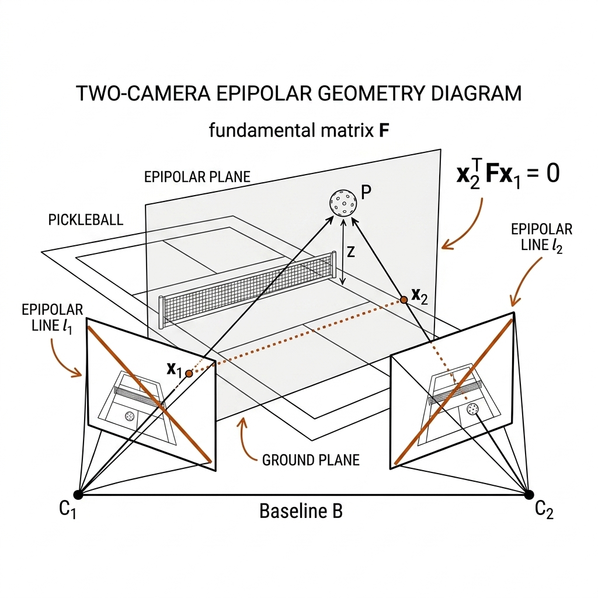
Triangulation itself comes in three solvers, in order of accuracy. DLT: each view contributes two equations from $\mathbf{x}_i \times (P_i \mathbf{X}) = 0$; stack four rows into $A\mathbf{X}=0$ and take the smallest singular vector — this is exactly cv2.triangulatePoints. It minimizes an algebraic, not geometric, error, so it is biased under noise — but it is fast and is the correct initializer. Midpoint: cast the two rays $\mathbf{c}_i + \lambda_i \mathbf{d}_i$ and take the midpoint of their closest approach; geometrically intuitive, and the ray miss distance is a free quality signal — rays that miss by 10cm at court scale are a bad correspondence, not a noisy point. Gauss–Newton refinement: minimize the reprojection error $\sum_i d(\mathbf{x}_i, P_i \mathbf{X})^2$ from the DLT seed; 3–5 iterations suffice (for two views the Hartley–Sturm correction is closed-form). All three run in microseconds on the M4 Max CPU.
The error budget — and the design insight — applies to both sports in the same way, with different geometries. For pickleball the relevant baseline is the 6.71m net-post spread; for rugby league it is the touchline-to-touchline distance. The same formula sets the budget in both cases.
$$\sigma_Z = \frac{Z^2 \sigma_p}{f B}$$
| Baseline B | Depth error at 8m | Verdict |
|---|---|---|
| 6.71m (net-post spread) | ±1.9mm | Officiating-grade — the PlayReplay topology |
| 1m | ±12.5mm | Practice-facility grade |
| 0.3m | 42mm (≈ ball radius) | Not sufficient — the bias buys little |
Those rows assume an iPhone main camera ($f$ = 2564px) and a 0.5px sub-pixel ball center; the σp assumption is itself a measurement the lab owes (14.10). The same formula runs the rugby league case. Two broadcast positions on opposite touchline ends give $B$ = 40m at $Z$ = 60m with a long lens ($f$ ≈ 4000px): $\sigma_Z \approx 60^2 \times 0.5 / (4000 \times 40) \approx 11$mm — millimetric in theory. But broadcast cameras are PTZ: the pose feeding that formula is re-estimated every frame (14.5), so the real error lives in calibration, not pixel noise. Two adjacent broadcast cameras 5m apart degrade the same computation to ~90mm. Baseline is the accuracy budget. You cannot compress it away with better models — at 5m depth a rig is 4× better than at 10m, which is exactly why PlayReplay's cameras sit close to the lines they judge instead of far away with long lenses.
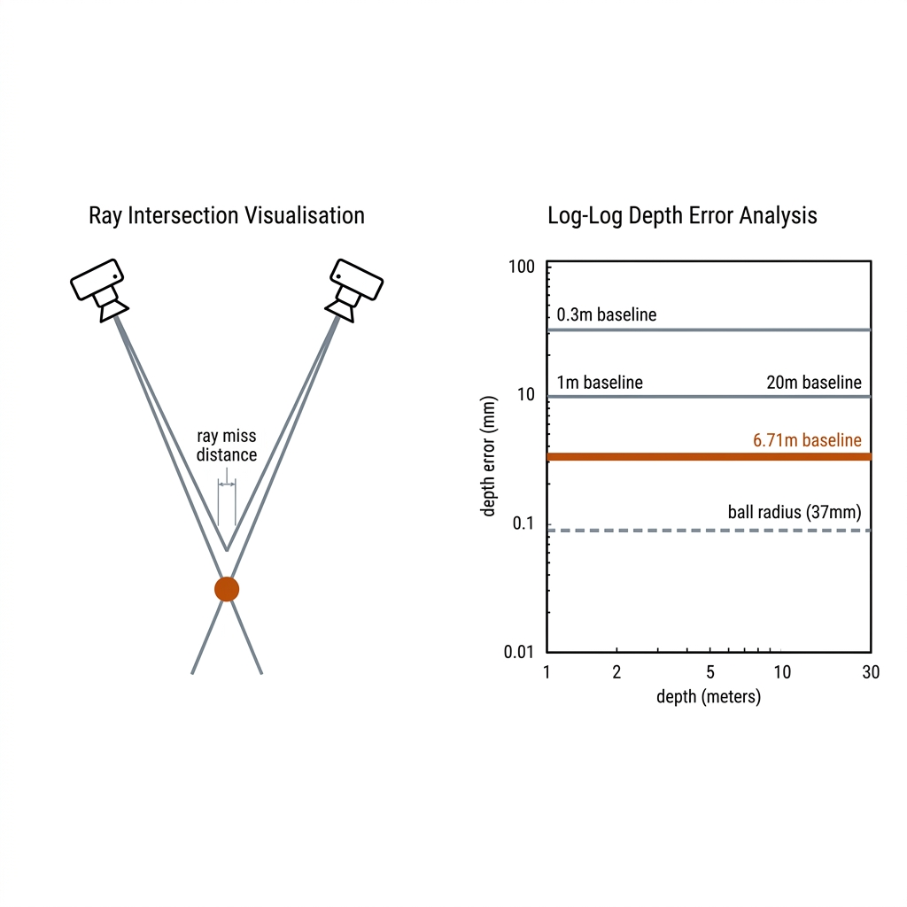
14.2b From Two Views to N Views
Two views are the minimum, and they fail in three characteristic ways: the ball is occluded in one view at exactly the frame that matters (net tape, a defender's body); two candidate blobs survive the epipolar gate and correspondence is ambiguous; or the geometry degenerates when the motion lies near the epipolar plane. Adding cameras attacks all three, and changes the math in one useful way: with $N \ge 3$ views the DLT stacks $2N$ rows, and the redundancy turns triangulation into a RANSAC-able problem — drop the worst-residual ray and re-solve. The four-camera PlayReplay topology buys exactly this outlier rejection; Hawk-Eye's 8–10 cameras put any ball position in 4–6 views at once.
The honesty note: random pixel noise averages down like $1/\sqrt{N}$, but systematic calibration error does not average at all — every view registered to the same slightly-wrong court model shares the same bias, and twelve cameras triangulate to the same wrong answer with great confidence. N buys occlusion insurance and outlier rejection, not unbounded accuracy. This is also why a well-run system publishes per-call observability — how many views contributed, at what residual — alongside the call itself.
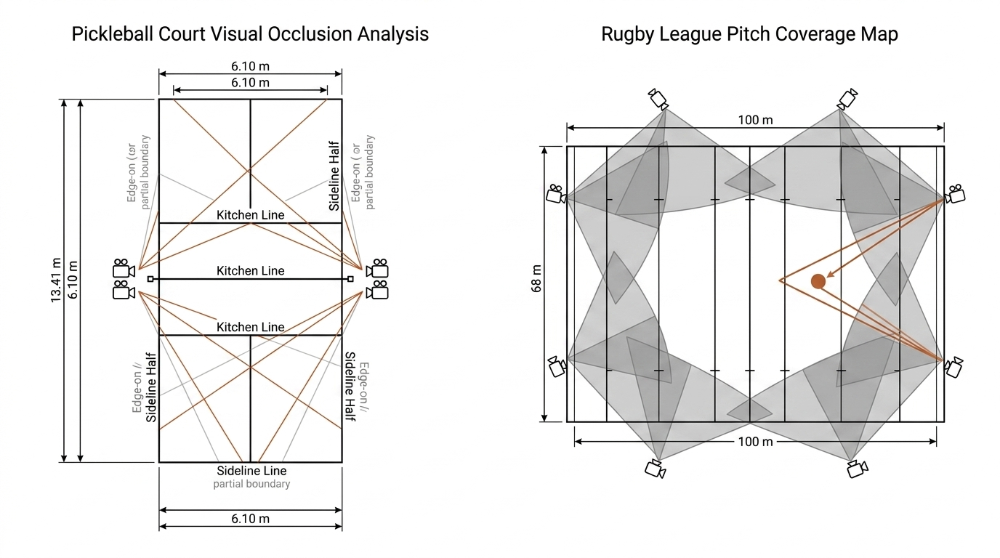
14.3 The Industry Topologies (Verified)
| System | Camera Config | Verified Facts | Book Reading |
|---|---|---|---|
| Hawk-Eye | 8-10 cams @ ~340fps | Tennis/cricket officiating standard; 2.6-3.6mm accuracy [verify] | The reference ceiling — many-cameras-far |
| PlayReplay | 4 HD cams (2 per net post) | 80M+ calls, ~300k matches, 99.9% claimed [verify], ITF Silver; Pickleball Inc exclusive distribution | The transferable topology for pickleball — few-cameras-close |
| PlaySight | fixed multi-angle | ~$10-15k/court [verify quote]; PPA/MLP partner | Facility-scale; the buy vs build reference |
| Owl AI (× MLP) | software-only behind standard broadcast cams | ELC debut PPA Greater Zion Cup March 2026 → MLP 2026; method and error tables unpublished [verify] | The cautionary single-cam prior — verify before believing |
Two design philosophies are on that list. Many-cameras-far (Hawk-Eye) blankets a venue so any position sits in several long-baseline views; the price is infrastructure. Few-cameras-close (PlayReplay) exploits grazing geometry: a camera near the net post views the kitchen line's plane nearly edge-on, the across-line parallax collapses, and the call reduces to the sign of a distance from a triangulated 3D point to the line plane. Rugby league has no entry on the list at all. The NRL's try-line decisions remain human judgment on 2D replays; Sportable's chip-in-ball approach changes the measurement physics entirely (RF/IMU instead of pixels — the ball reports its own position [verify accuracy class]), and no camera-based ELC operates in the sport. The geometry for one exists today: a broadcast ring calibrated against the field model would produce try-line groundings with a published σ. The sport has so far chosen the human in the loop; Owl AI is the test of whether learned priors on broadcast feeds can close that gap without admitting it is estimation.
14.3b Sport-Specific Geometry: One Camera vs Eight
The camera count is not a luxury tier; it is a coverage and occlusion budget, and the two sports price it differently. A pickleball court is 13.41 × 6.10m. One elevated 4K camera resolves every player, and players live on the ground plane — the homography is legal for feet (E05: 3.82cm RMSE from a manual four-corner fit) — so a single camera answers essentially every rally-analytics question in the book. The one structurally missing observable is ball height, and it is only needed within about a metre of a line. The second and fourth camera are bought specifically for line calls, and the honest claim for a one-camera facility is "rally analytics plus estimated bounce calls," not measurement.
Rugby league cannot play that game. A 100 × 68m pitch spread over a 4K frame yields roughly 38 pixels per metre — a player is a smear and the ball is invisible — so coverage must be partitioned across a broadcast ring, and 26 bodies guarantee that any ground-level view of a ruck or a try-line scramble is occluded from somewhere. The broadcast answer is elevation and multiplicity: high behinds, spidercam, 6–8 main positions. For the try-line specifically, the adjudicating geometry is a camera on the dead-ball line extended, viewing the goal-line plane edge-on — the same grazing trick as PlayReplay, at 20× the scale. A practical 3D try-line system wants 4–8 calibrated cameras: two edge-on to the goal-line plane, the rest for coverage and occlusion insurance.
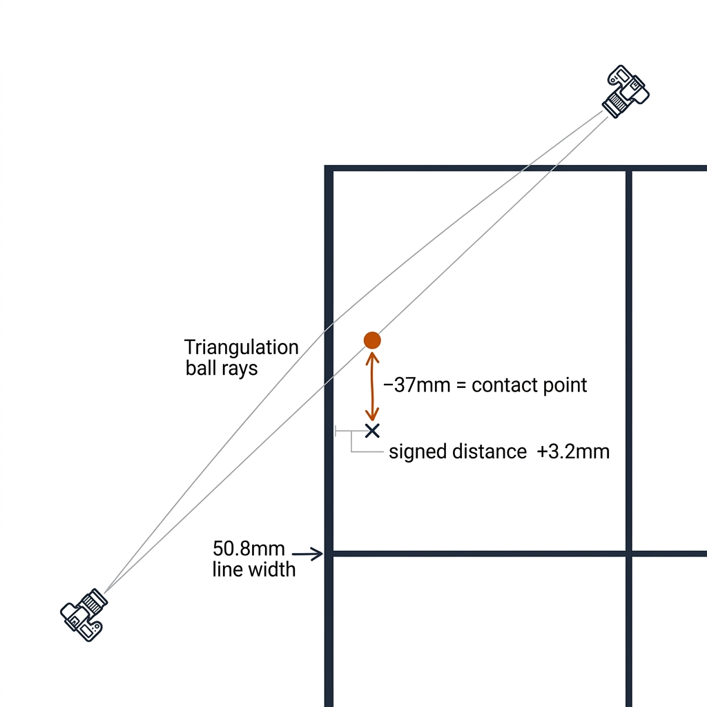
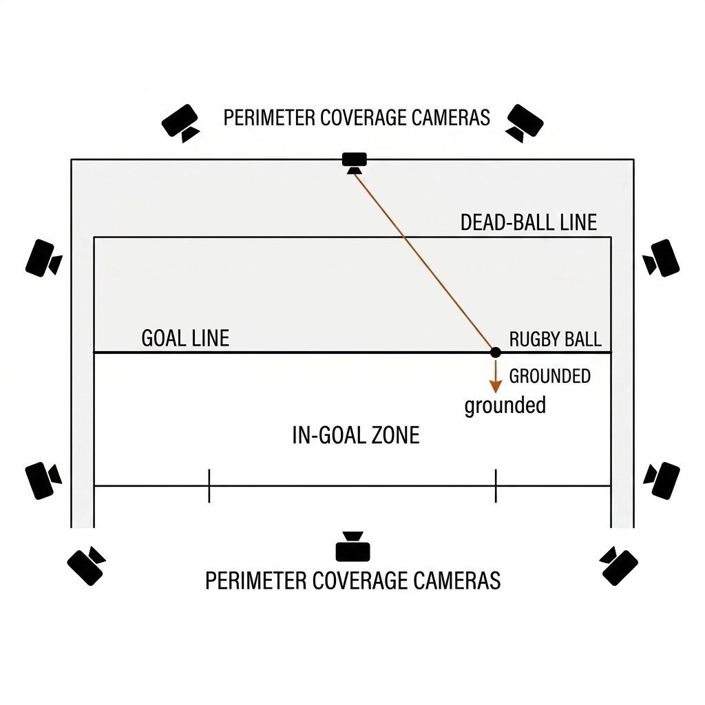
14.4 The Triangulation Workflow
The workflow is a gate chain: each stage has a hard threshold, and a failure anywhere means no call — the honest output of a line-calling system is a rejection, not an estimate. This is the discipline the v1 book's "48 IDs / 74.8% HOTA" style transcript never showed: the system's value is in how it says "I don't know".
- Calibrate each camera: chessboard intrinsics <0.5px RMS, then per-camera extrinsics by PnP against ≥6 visible court line junctions. Gate: anchors reproject <2px. A net-post camera sees its own half's junctions; the court model is the shared reference so cameras that never see each other's views still share a world frame.
- Sync: Δt ≤ 2ms or the ball moves 63mm (≈ ball diameter) between cameras at serve speed — genlock or timecode; clap-sync only for slow bounces, and only with the drift budget published.
- Detect: ball center σ<1px — chapter 12's temporal+physics detector supplies the candidate; sub-pixel by intensity centroid or fitted ellipse. Gate: center covariance <~1px².
- Correspondence: epipolar line search — one survivor per pair. Ambiguity (two blobs within τ of the line) means no call this frame.
- Intersect: DLT seed, Gauss–Newton polish; rays miss <5cm (else reject, no call). With ≥3 views, RANSAC the rays and drop the worst residual.
- Reproject: back into each image <2px (else reject). This is the only honest real-time QC: a triangulated point that fails to reproject into every view was a correspondence failure, not a measurement.
A worked pickleball call, end to end: ball blob at sub-pixel in both net-post cameras (baseline 6.71m), triangulated center at (11.94m, 0.31m, 0.042m) in court coordinates; contact = center − 37mm vertical → (11.94m, 0.31m, 0.005m); signed distance to the sideline plane +3.2mm with σ = 1.9mm from the 14.2 budget → in, by 3.2 ± 1.9mm, published with its uncertainty. The rejection case matters as much: the same rally an instant earlier, the ball crosses the net tape and one view loses it — observability drops to one view, the gate chain refuses, and the output is "no call," which is the correct product behavior. The reference implementation is the industry's own: Hawk-Eye's 8-10 cameras at ~340fps (the density that makes 2.6-3.6mm [verify] possible) and PlayReplay's 4-camera net-post topology (the transferable pickleball-legal config with the 6.71m baseline). The source-backed lesson: baseline is the accuracy budget, and the budget is set by camera geometry, not by model sophistication.
Contact = ball center − 37mm (radius) at the plane; covariance handed to the C09 tracker as the identity-shared state — a measurement with error bars, not ground truth.
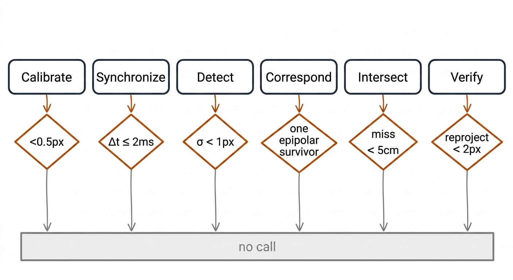
14.5 N-Camera Calibration
On a pickleball court the painted line junctions form a built-in ChArUco board: every camera runs PnP against the same 13.41 × 6.10m rulebook geometry, so two net-post cameras that never share a field of view still share the world frame. Court as the shared board: per-camera PnP from the court model; stereoCalibrate for shared-FOV pairs as an independent cross-check; bundle adjustment (Ceres/GTSAM/COLMAP — all BSD) over the volume — jointly refine every $K_i, R_i, \mathbf{t}_i$ and the triangulated anchors by minimizing total reprojection error, and re-run it after any camera is touched, moved, or thermally cycled. For gym-scale volumes without a painted court model — the rugby indoor-training case — the mocap-industry pattern is the LED wand: wave a bright point through the volume, detect it in all views (epipolar + temporal correspondence is trivial for the brightest blob), triangulate, bundle-adjust. Broadcast PTZ is the hardest case: pose changes every frame, so calibration is continuous — field line junctions re-detected per frame and re-fit against the field model, the TVCalib lineage from chapters 6–7.
Daily ritual: 2px reprojection drift check on the ten fixed court anchors in every camera. The reason is geometry, not paranoia: an angular error $\theta$ moves a ray by $Z\theta$ at depth $Z$, so a 0.5° pole sway = 87mm at 10m — larger than the line width, silently. Net-post mounts (1.07m lever arm) are intrinsically stiff; 4.5m poles in wind are not. The drift budget is about installation stability, not model quality, and every call should carry it as a measurement ± drift estimate.
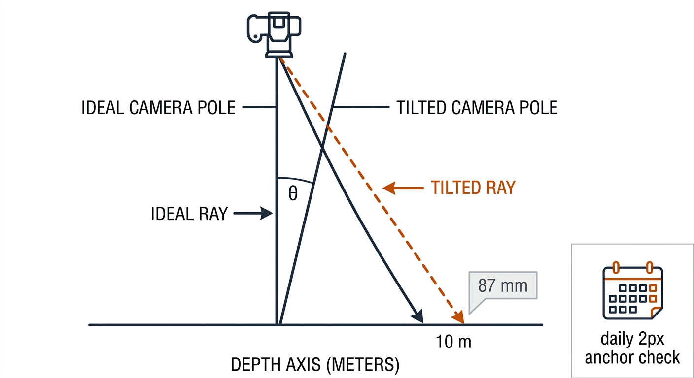
14.6 Scene 3D: From Minimap to Replay
| Rung | Tool | License / Hardware |
|---|---|---|
| 2D minimap | Homography + tracks (chapters 5-6) | M4 ✅ — the default replay |
| Point map | VGGT (CVPR 2025 Best Paper; VGGT-1B-Commercial checkpoint) | Community MPS port (jmanhype/vggt-mps) [verify fidelity]; commercial checkpoint gated |
| 3DGS replay | gsplat / nerfstudio (Apache-2.0) — CUDA-only ⛔ | Colab; research frontier: SPIN-4DGS (fast motion), LiveSplats (real-time sport) |
Triangulation gives points you chose to track; scene 3D reconstructs everything, and the deliverable is a novel-view render, not a measurement. The same ladder applies to both sports: a pickleball rally is answered by a 2D minimap, a coaching question by a VGGT point map, and only a perspective-switch replay of a line-call moment justifies 3DGS. Decision rule: 2D minimap unless the question is visual (replay, broadcast); VGGT when camera pose is the unknown; 3DGS only when a watchable 3D replay justifies Colab compute (a 3DGS court corner takes 10-20 min per scene [verify per scene]). The broadcast case is where this rung matters for rugby league: every NRL match already records the angles — a ring of broadcast feeds of the same event — and the missing piece is per-frame calibrated pose. VGGT recovers cameras, depth and a point map feed-forward in seconds from a handful of frames, and the court-planarity residual on the point cloud doubles as a free calibration audit against the known 100 × 68m geometry. For the wow deliverable — a rendered perspective switch of a grounding or a contact moment — 3DGS is the tool: synchronized stills → COLMAP posing → splatfacto on Colab → novel-view render. Static geometry reconstructs beautifully; the ball at 30 m/s is exactly what stock splatfacto blurs into ghosts and what SPIN-4DGS exists to fix. License note: the original Inria 3DGS repo is research/non-commercial — cite it, don't ship it; the permissive stack is gsplat/nerfstudio (Apache-2.0), CUDA-only, so the lab Mac hands this leg to Colab.
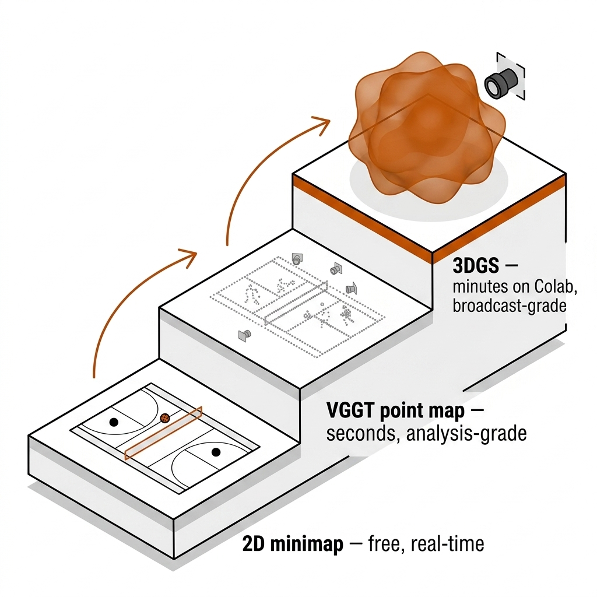
14.7 Honest Limits
- Sync at speed: triangulation assumes the two rays are simultaneous; slip Δt maps to false position ≈ $v\,\Delta t$. For pickleball, a 31.3 m/s serve × 2ms = 63mm ≈ ball diameter — genlock or no call at serve speed. For rugby league, a 9 m/s pass × 2ms = 18mm, which is still larger than a grounding decision margin and demands genlock or per-frame timecode. At a 4 m/s pickleball bounce descent the same slip is 8mm, which is why clap-sync is tolerable for bounce calls only. Anything computed from unsynchronized 30fps phones is illustration, not measurement.
- Calibration drift: daily 2px check; publish observability per call. Drift is systematic — it does not average away across cameras, it correlates (14.2b).
- Correspondence ambiguity: one ball plus tight sync is trivial; basket drills with three pickleballs in flight are the hard problem — epipolar gating prunes, track continuity (C09/C12) disambiguates, unresolved means no call. Net-tape occlusion hides the ball at exactly the contact frame — reject, don't infer. In rugby league, rucks occlude the ball from every sideline; that is a pose problem, not a triangulation problem.
- Surface physics: clay makes its own mark (a competing measurement system — Roland-Garros resisted ELC on those grounds [verify 2026 status]); grass skids and smears the contact patch in time; the book's pickleball hard court gives a clean bounce with ~5ms compression [verify]. Rugby league's turf is also compliant, but a grounding call needs the ball-body contact moment, not just a surface mark.
- The number of cameras: beyond 8–10 overlapping views the returns are occlusion insurance, not accuracy — random noise is already $\sim 1/\sqrt{N}$-flat and systematic calibration bias is untouched. Spend the twelfth camera's budget on sync and mounts instead.
- Rugby congestion: rucks occlude from every sideline; multi-view 3D of players in congestion is a pose problem (C10–C13), not a triangulation problem — no camera count fixes a ball hidden under five bodies.
14.8 The Cost Ladder
| Level | Config | Cost | Honest Verdict |
|---|---|---|---|
| Practice facility | 2-cam genlocked rig (phone-class or compact) | ~$2.8k | Feasible and honest for bounce calls with published σ — NOT officiating-grade at serve speed |
| Amateur league | 4-cam net-post (PlayReplay topology) | ~$3.2-4k/court/yr [verify] | The right topology; buy vs build is a licensing decision |
| Professional | Hawk-Eye class | six figures | Already exists; the book's lab is replication, not competition |
| RL venue | Calibrated broadcast ring, or chip-in-ball | venue infrastructure / league license [verify] | The geometry is ready; the sport still chooses the Bunker |
The practice-facility verdict is the one this book stands behind: a two-camera genlocked rig on a long baseline is feasible and honest for bounce line calls at rally speeds — publish σ with every call and it beats the human eye. It is not officiating-grade at serve speed without 240fps plus genlock, and it is not Hawk-Eye. The framing is "measurement with an error budget" versus "product with a claim."
14.9 The Line-Call Build Recipe (Copy This)
- Baseline first: 6.71m net-post camera spread (the PlayReplay topology for pickleball) — 2 HD cameras per net post, no fancy lenses. For rugby league, substitute a goal-line edge-on pair on the dead-ball line plus two coverage cameras on the in-goal touchlines.
- Clock-sync before anything: genlock or ≥ppm timecode; clap-sync acceptable only for slow bounces (63mm error at 2ms is a ball diameter at pickleball serve speed).
- Calibrate with the court/field as the board: ChArUco/planar PnP per camera, stereoCalibrate for shared-FOV pairs, bundle-adjust the volume; daily 2px drift ritual.
- Detect the ball ≤1px σ (chapter 12's temporal+physics path gives you the candidate).
- Epipolar-correspondence: one survivor per pair or reject.
- Triangulate + reproject: miss <5cm, reprojection <2px, else no call.
- Report σ, not just the call: publish per-call uncertainty and observability (how many views contributed, at what residual) — the C20 discipline at 3D scale.
14.9b The Ten Use Cases: Applied Framework
The ten use cases below are the applied bridge from the geometry above to the two sports. They fall into three categories: Category A — Line-Call Officiating (UC 01–03), the decisions a second camera exists to make; Category B — Rig Engineering & Error Budgets (UC 04–06), the design and honesty work that decides whether a rig's numbers can be trusted; and Category C — 3D Scene, Identity & the Digital Twin (UC 07–10), where triangulation stops being a call and becomes a stage. Every case carries its evidence label: measured (book experiment E-ID), source-backed (Hartley & Zisserman / paper), or [verify] (practitioner model, not yet established in literature).
Category A: Line-Call Officiating (UC 01–03)
UC 01 — The Kitchen-Line In/Out Call
The problem: the 5.08cm non-volley-zone line decides more disputes per match than every other line combined, and it is exactly where the single-camera parallax bias (66mm, C04) exceeds the line width. The mechanism is the full 14.4 gate chain run on the PlayReplay topology: two cameras per net post, PnP-calibrated against the kitchen-line junctions, genlocked, detecting the ball blob at sub-pixel, corresponding by epipolar line, triangulating by DLT with Gauss–Newton polish, and reprojecting into both views before the call is allowed to exist. The math is one signed distance: with the kitchen line as the plane through point $\mathbf{p}_0$ with normal $\hat{\mathbf{n}}$, the contact point $\mathbf{X}_c - 37\,\text{mm}\,\hat{\mathbf{z}}$ is in by $d = \hat{\mathbf{n}} \cdot (\mathbf{X}_c - r\hat{\mathbf{z}} - \mathbf{p}_0)$, published as $d \pm \sigma_d$ — the worked 14.4 example reads in by 3.2 ± 1.9mm (geometry source-backed; the σp = 0.5px input is a lab measurement still owed, 14.10). Payoff: officiating — a call with an error bar beats a claim with a confidence score.
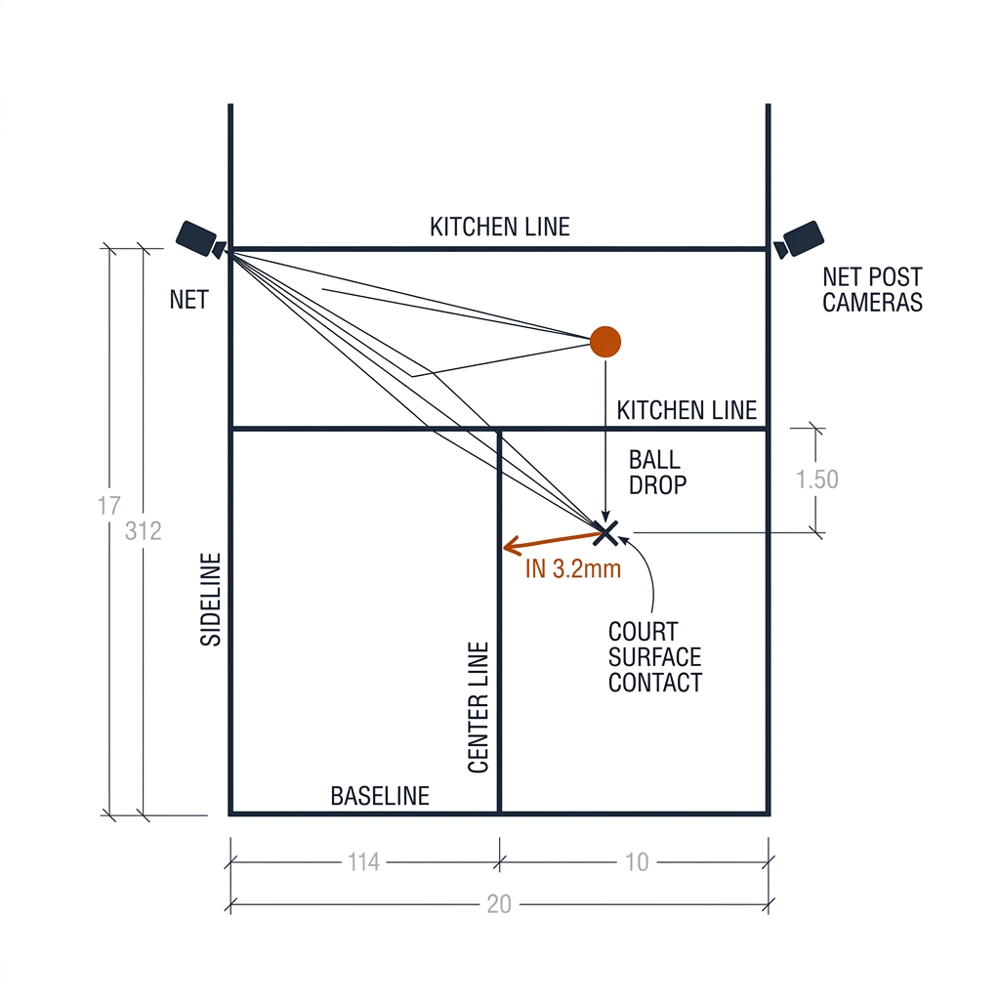
UC 02 — The Try-Line Grounding (Bunker Decision)
The problem: the NRL Bunker adjudicates groundings from 2D replays, and "ball held above the line" versus "ball grounded behind it" are pixel-identical from a sideline angle (14.1). The mechanism imports PlayReplay's grazing trick at 20× scale: a camera pair on the dead-ball line extended views the goal-line vertical plane edge-on, coverage cameras add occlusion insurance, and the grounding predicate becomes geometric — ball center height $z_c \le r + \epsilon$ while its horizontal position satisfies $\hat{\mathbf{n}} \cdot \mathbf{X}_c \ge 0$ against the goal-line plane. The theory budget is millimetric (14.2: ±11mm for a 40m cross-touchline baseline at 60m) but the honest error term is per-frame PTZ pose, re-fit against the field model every frame (14.5). No camera-based ELC operates in rugby league today [verify — Sportable's chip-in-ball is RF/IMU, a different physics]. Payoff: officiating and broadcast — the sport's most expensive replay question becomes a measurement the moment a calibrated ring exists.
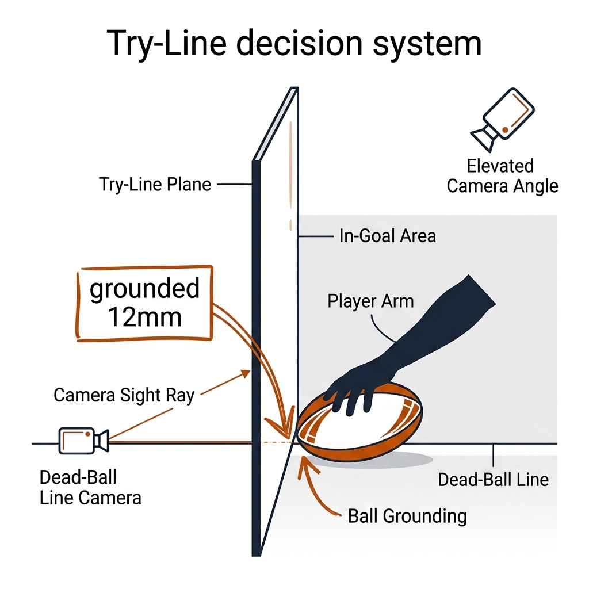
UC 03 — The 3D Ball-to-Plane Primitive
The problem: every bounce call in both sports — in/out, touch, grounding, double-bounce — is the same question wearing different rules language, and building each as a one-off product is how error budgets get lost. The mechanism is one primitive used everywhere: triangulate the ball center $\mathbf{X}_c$ with its covariance $\Sigma$ (14.2, 14.4), drop one radius along local vertical for the contact, and evaluate a signed distance to whichever rule-plane matters — sideline, baseline, kitchen, goal-line, touchline. The math propagates honestly: $\sigma_d^2 = \hat{\mathbf{n}}^\top \Sigma \, \hat{\mathbf{n}}$, so a grazing-view rig that is tight in $Z$ but loose in $X$ reports a wide σ exactly when the call runs along the line. Surface caveat: on grass the contact patch smears in time and center-minus-radius over-corrects [verify — trajectory fitting across frames is the grass-court answer]; the hard court gives a clean ~5ms contact [verify]. Payoff: one audited primitive replaces five vendor claims — every downstream call inherits the same covariance.
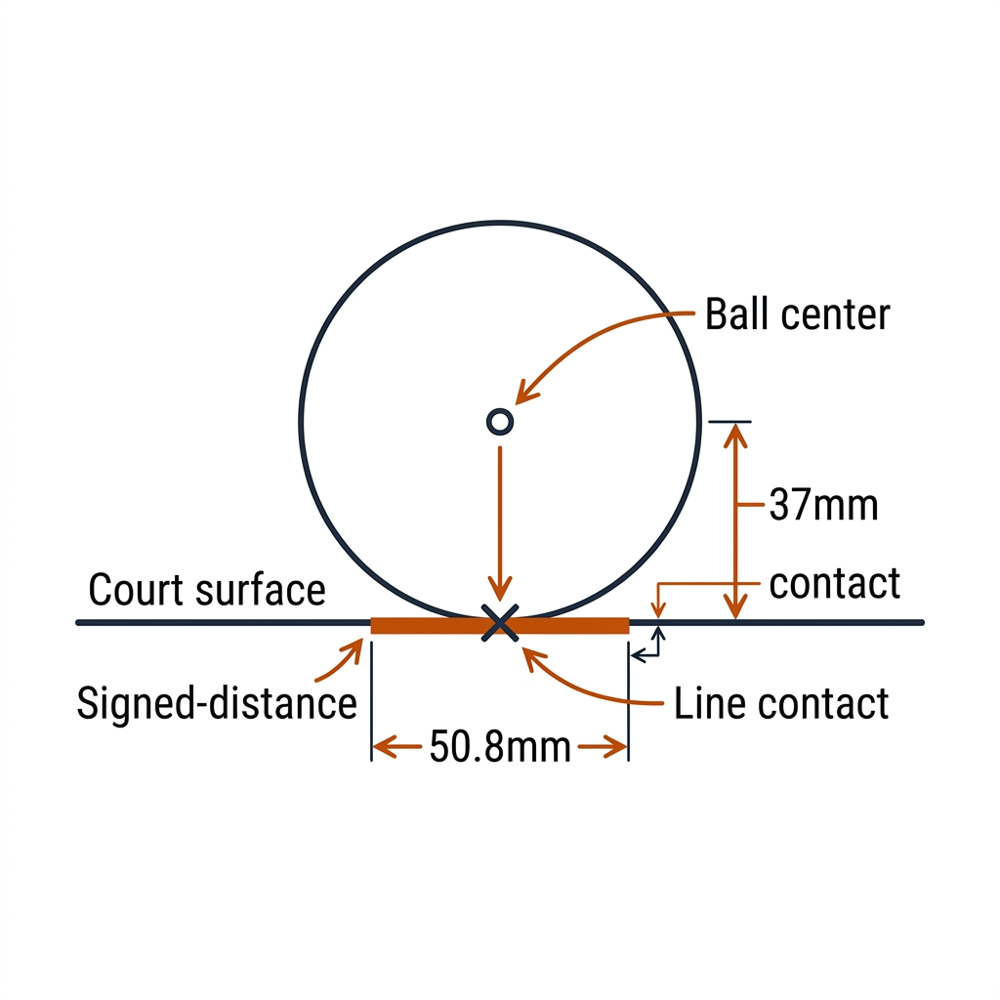
Category B: Rig Engineering & Error Budgets (UC 04–06)
UC 04 — Camera Array Calibration: 4-Cam Pickleball vs 8-Cam Rugby League
The problem: every number in Category A is only as good as the shared world frame, and net-post cameras on opposite posts never see each other's views — pairwise calibration is impossible. The mechanism makes the venue the calibration object: each camera runs PnP against the same rulebook geometry (13.41 × 6.10m line junctions for pickleball; 100 × 68m field junctions for rugby league), stereoCalibrate cross-checks shared-FOV pairs, and bundle adjustment (Ceres/GTSAM/COLMAP, all BSD) jointly refines every $K_i, R_i, \mathbf{t}_i$ and anchor by minimizing total reprojection error $\sum_{i,j} d(\mathbf{x}_{ij}, P_i \mathbf{X}_j)^2$. The anchor detector is already measured: E11 finds 12.4 line junctions per frame automatically. Rugby league adds the hard mode: broadcast PTZ re-aims every frame, so calibration is continuous per-frame re-fit (the TVCalib lineage, C06/C07), not a one-time ritual. The daily 2px anchor-reprojection check (14.5) is what stands between a drifted rig and silently wrong calls — a 0.5° sway is 87mm at 10m. Payoff: every chapter that consumes 3D coordinates (C09, C23, C24, C28) inherits this calibration — it is the single highest-leverage maintenance task in the book.
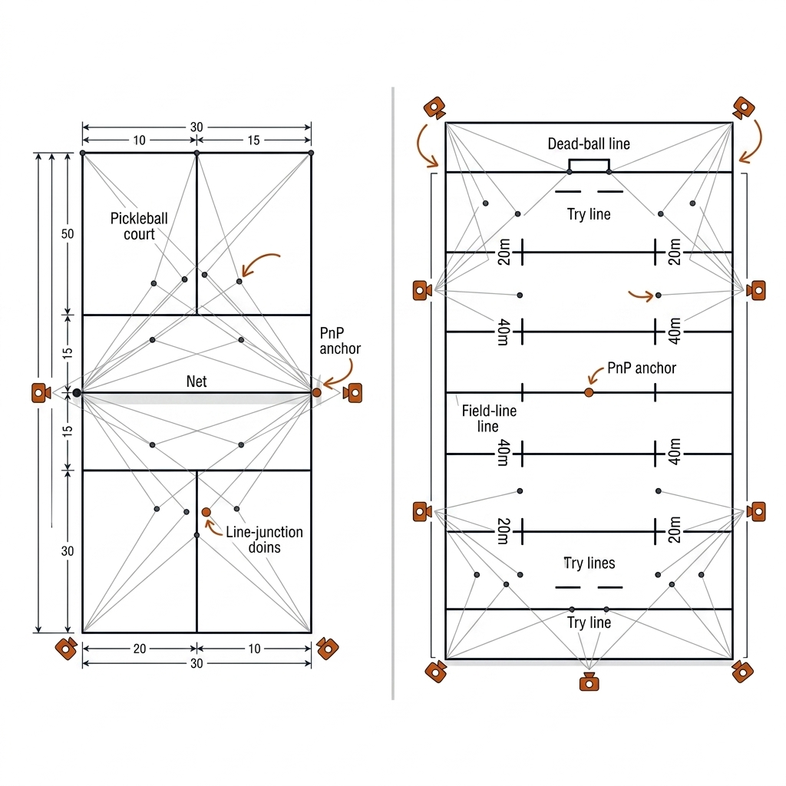
UC 05 — Triangulation Error Analysis as a Procurement Tool
The problem: "where should the cameras go?" is usually answered by where the poles already are. The mechanism turns $\sigma_Z = Z^2 \sigma_p / (fB)$ into a design sweep: for each candidate mounting geometry, plot depth error across the working volume and reject any rig whose σ exceeds the adjudication margin — 37mm ball radius for pickleball bounces, ~10mm for grounding claims that must beat the human eye. The worked fan (14.2) is the argument in one chart: cross-net-post 6.71m → ±1.9mm at 8m; same-post 1m → ±12.5mm; handheld 0.3m → 42mm, error ≈ ball radius; and for rugby league the 40m cross-touchline baseline at 60m computes ±11mm in theory while two adjacent broadcast positions 5m apart degrade to ~90mm. Two practitioner rules fall out and both are source-backed geometry, not opinion: baseline is the accuracy budget, and depth error grows quadratically — a rig excellent at 5m is 4× worse at 10m. Payoff: procurement — spend on baseline, mounts and sync before spending on resolution; no model upgrade moves these curves.
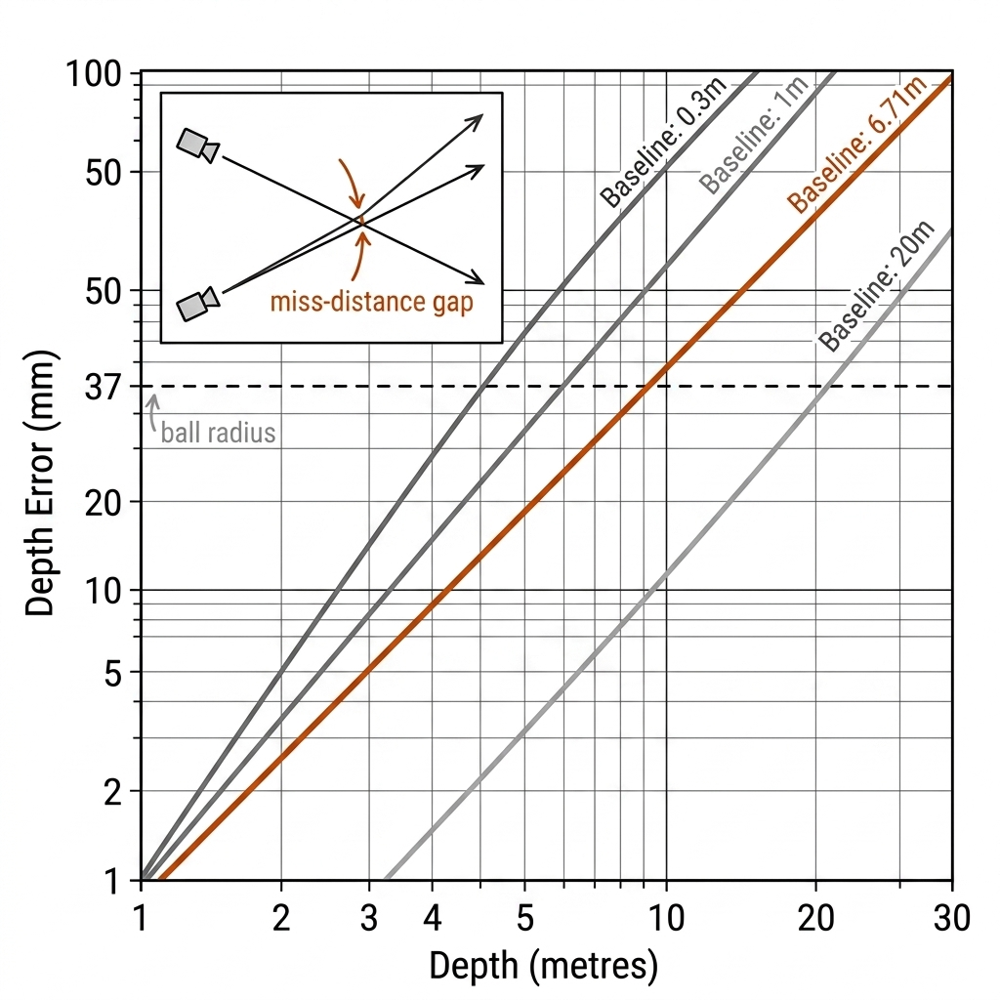
UC 06 — Depth from Broadcast: Honest Single-View Estimation
The problem: most footage in both sports is one camera — a fence-mounted phone at a pickleball court, the nrl-001 broadcast feed — and the temptation is to ship 3D from it anyway. The mechanism is priors, honestly labelled: feet on the ground plane are homography-legal (E05, 3.82cm RMSE), so a player's ground position is a measurement; ball and torso height are not observable, so depth comes from a learned prior — monocular depth networks, known player height bounding the ray, bounce-frame classification (C12) — and every output carries a wide, published band instead of a point [verify per model — no public error tables for broadcast-depth products as of 2026-09]. The math is the 14.1 failure restated as a budget: the unobservable $z$ maps to court error $\Delta \approx zD/H$, so a 1m height ambiguity at 8m from a 4.5m rig is a ±2.3m position band — state it or don't ship it. Owl AI's software-only ELC on broadcast feeds is the industry's live experiment in this exact regime; its accuracy claims are unpublished [verify]. Payoff: archival analytics — legacy footage becomes useful for tactics and coaching, never for officiating.
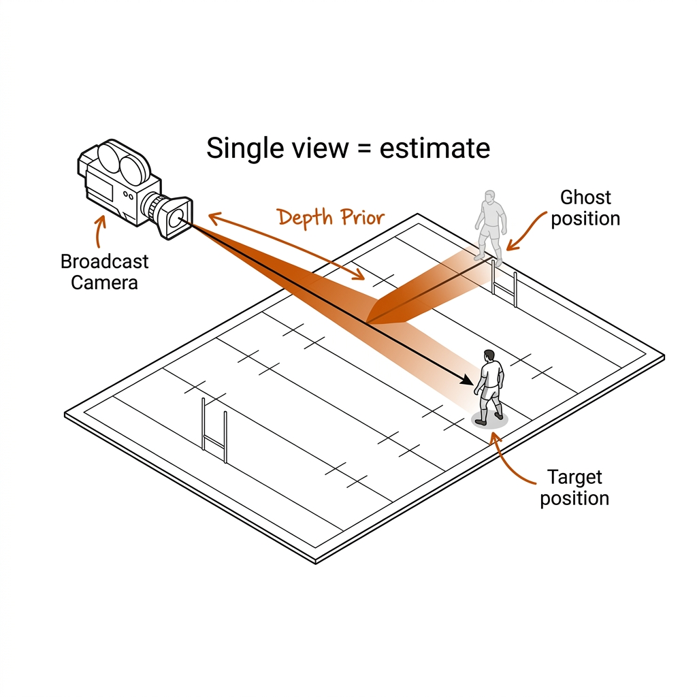
Category C: 3D Scene, Identity & the Digital Twin (UC 07–10)
UC 07 — 3D Player Reconstruction from Calibrated Views
The problem: 2D pose (C11) cannot see knee valgus toward camera, tackle contact height, or center-of-mass depth — the biomechanics questions are 3D. The mechanism reuses the ball's math at the joint level: per-view 2D keypoints from the pose stack, epipolar-gated across views, triangulated per joint with the same DLT + Gauss–Newton, and assembled into a 3D skeleton — with the honest caveat that joint localization noise is 2–5px, not the ball's 0.5px, so joint σ is centimetric even on a good baseline [verify per pose model]. Where keypoints fail in congestion, visual-hull intersection of silhouettes bounds the body volume as a fallback. This is the multi-view complement to C10's single-view SMPL-X claim: measured geometry where cameras exist, learned priors where they don't. Payoff: biomechanics and injury prevention — 3D contact heights and joint angles on real match footage, not a mocap lab.
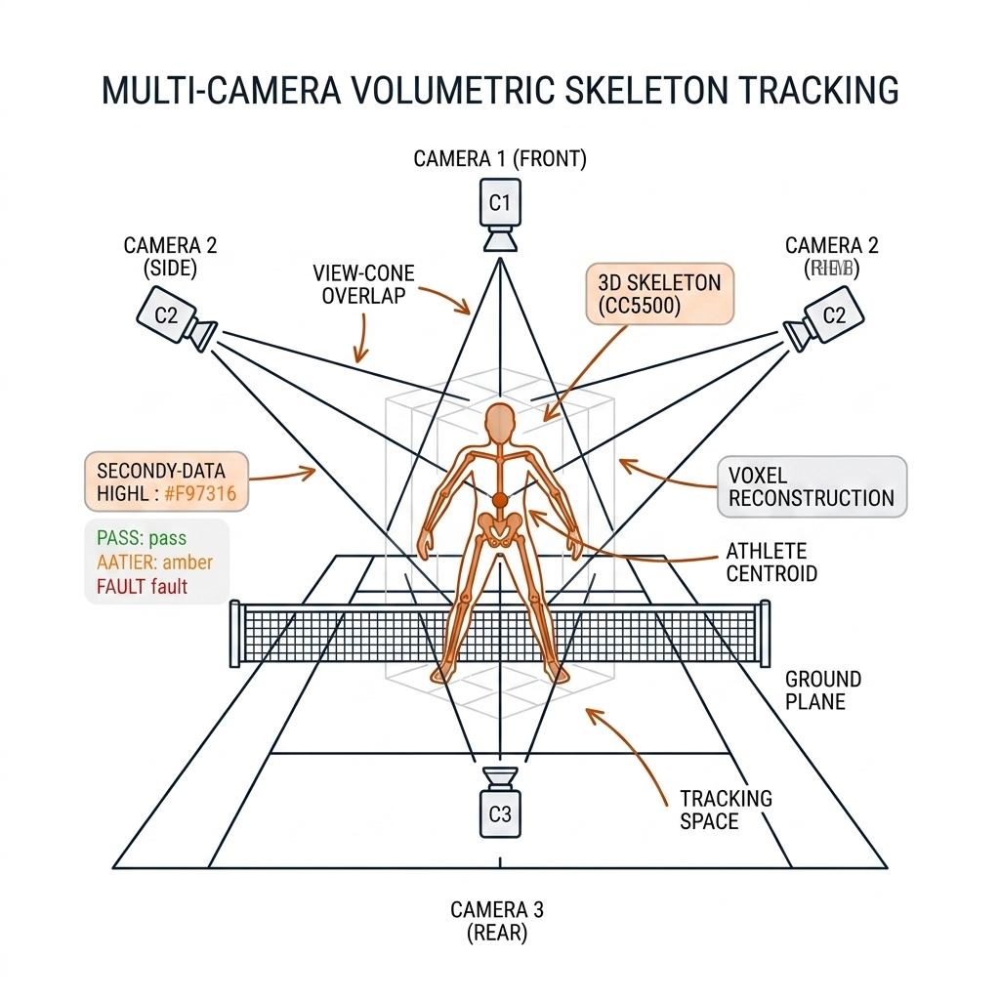
UC 08 — Multi-Camera Re-Identification
The problem: tracking fragments the moment a player leaves a view — a pickleballer crossing the fourth camera's seam, a rugby league winger vanishing off one broadcast camera and reappearing on another — and without identity, per-player statistics are fiction. The mechanism stacks three gates in order of cost: position continuity (the triangulated or homography track must continue through the seam within its covariance, C09 handoff), epipolar gating (a candidate in the new view must satisfy $\mathbf{x}_2^\top F \mathbf{x}_1 = 0$ within Sampson distance τ — a physical impossibility filter that deletes most wrong matches), and appearance embedding (the C09 ReID vector resolves whatever survives). Rugby league's hard mode is PTZ: $F$ changes every frame, so the per-frame field re-fit (UC 04) is a prerequisite and the embedding carries more of the load. Payoff: whole-court identity — the per-player load, speed and positioning numbers in C23 and C28 depend on it.
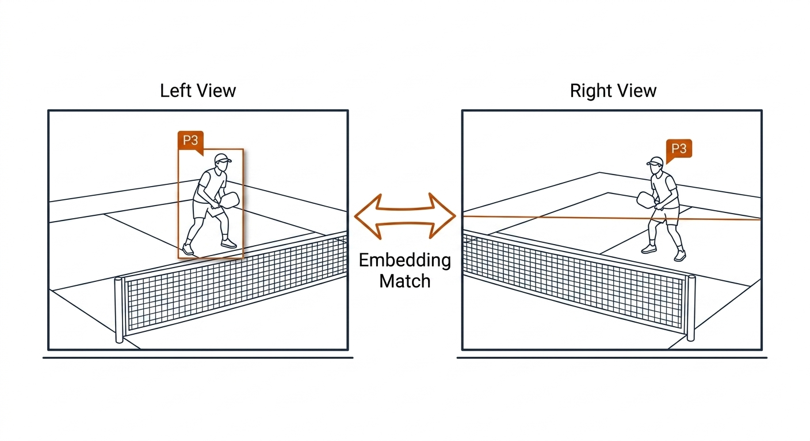
UC 09 — Occlusion Resolution by Surviving Views
The problem: the decisive frame is exactly where one view loses the ball — the net tape on a kitchen-line skimmer, five bodies over a grounded ball — and a system that guesses through occlusion is worse than one that refuses. The mechanism is redundancy with accounting: with $N \ge 3$ views, triangulation becomes RANSAC on rays (drop the worst residual, re-solve, 14.2b), and every call publishes its observability — how many views contributed, at what residual. The two sports stress it differently: pickleball's occlusion is brief and geometric (the tape, a partner's hip), so a 2-per-post topology keeps ≥2 surviving views of each line from opposite sides; rugby league's ruck occlusion is total from every sideline, which is a pose problem (C10–C13), not a triangulation problem — no camera count sees through bodies. The honest outputs are therefore three: call, call with degraded observability, and no call. Payoff: trust — the published observability is what separates a measurement system from a demo.
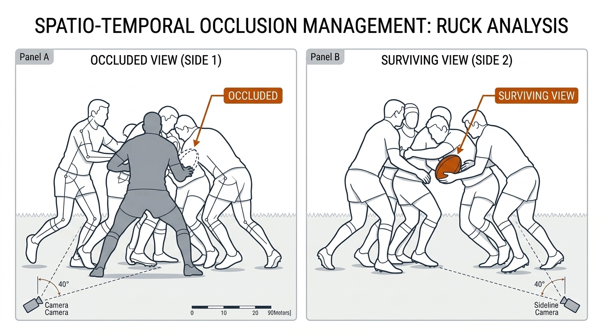
UC 10 — Full 3D Scene Reconstruction for the Digital Twin
The problem: C24's simulation and replay stage needs a metric 3D venue, not a 2D minimap — camera poses, court geometry, and eventually a renderable volume. The mechanism climbs the 14.6 ladder one rung at a time and stops early: VGGT (CVPR 2025 Best Paper; commercial checkpoint) turns 4–16 rig frames into cameras, depth and a point map in seconds, with the court-planarity residual doubling as a free calibration audit against the known geometry; gsplat/nerfstudio (Apache-2.0, CUDA-only → Colab) renders the broadcast-grade perspective switch when a contact moment justifies it. The moving ball at 30 m/s is what stock 3DGS ghosts and SPIN-4DGS exists to fix [verify — code availability unconfirmed as of 2026-09]. What the twin actually consumes is cheaper than photorealism: the calibrated camera array (UC 04), the triangulated ball and player tracks with covariances (UC 03, UC 07), and the venue model — all measurable today. Payoff: simulation and replay — C24 gets its stage, and the coach gets a walk-through instead of a minimap.
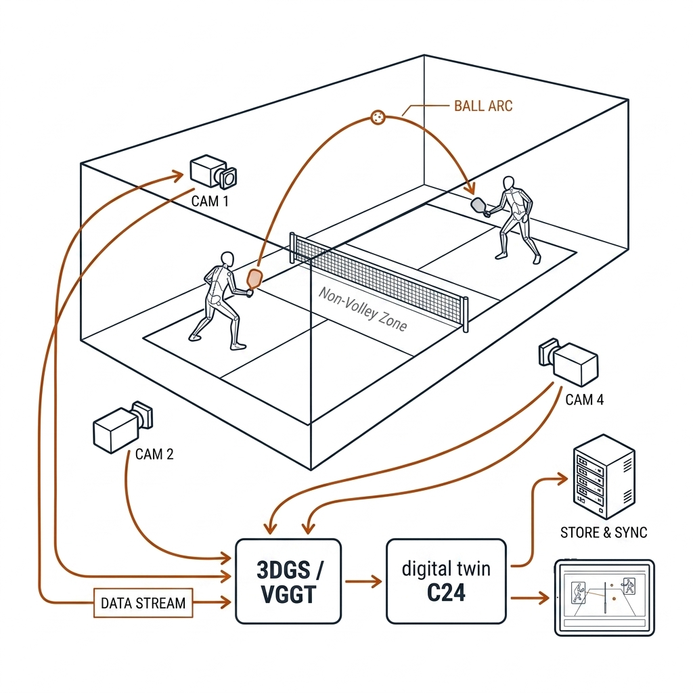
14.9c The Geometry Stack: Ecosystem, Code, Pipeline Feed
The chapter's tooling, with what each piece does for the two sports. Licenses verified 2026-09-01; lab flags per the C04 hardware tiers (✅ M4 Max native, ⚠️ friction, ⛔ Colab).
| Tool | Role in the Stack | License / Lab Flag | Sport Use |
|---|---|---|---|
| OpenCV calib3d | triangulatePoints, solvePnP, findEssentialMat, stereoCalibrate — every gate in 14.4 |
Apache-2.0 · ✅ CPU, microseconds | PB net-post triangulation; RL try-line ray intersection |
| Ceres / GTSAM | Bundle adjustment — one world frame, one error sum (UC 04) | BSD · ✅ CPU | 4-cam PB array polish; 8-cam RL ring polish |
| COLMAP | Free-form SfM posing when no court model exists; 3DGS front end | BSD-3-Clause · SfM ✅ CPU, dense ⛔ Colab | PB gym-scale LED-wand alternative; RL training-facility rigs |
| VGGT | Feed-forward cameras + depth + point map in seconds (UC 10) | Commercial checkpoint gated; community MPS port ⚠️ [verify fidelity] | PB court planarity audit; RL broadcast-ring pose recovery |
| gsplat / nerfstudio | 3DGS novel-view replay — the render rung (UC 10) | Apache-2.0 · ⛔ CUDA-only → Colab (Inria original is non-commercial — cite, don't ship) | PB line-call perspective switch; RL grounding replay |
| TVCalib lineage | Per-frame PTZ pose against the field model (C06/C07) | Research code [verify per repo] · ⚠️ learned matcher legs CUDA-tuned | RL broadcast calibration; PB unused (fixed cams) |
The runnable skeleton for Category A — the six gates of 14.4 as copyable Python:
import cv2, numpy as np
# --- once per rig: calibrate (gate 1) ---
# K_i from chessboard (C06, RMS < 0.5 px); extrinsics from court-model PnP
ok, rvec, tvec = cv2.solvePnP(court_junctions_3d, img_junctions_2d, K, None)
R, _ = cv2.Rodrigues(rvec)
P1, P2 = K @ np.hstack([R, tvec]), K2 @ np.hstack([R2, tvec2])
F = fundamental_from(P1, P2) # K2^-T [t]x R K1^-1
# --- per session: sync (gate 2) --- genlock: dt < 1 us. Clap-sync: publish dt.
# --- per frame: detect + correspond + intersect + verify (gates 3-6) ---
def line_call(x1, x2): # sub-pixel ball centers, both views
if sampson_dist(F, x1, x2) > TAU: # gate 4: epipolar survivor?
return NO_CALL
X = cv2.triangulatePoints(P1, P2, x1, x2) # DLT seed
X = gauss_newton_refine(X, P1, P2, x1, x2) # 3-5 iters, reprojection loss
if ray_miss(X, P1, P2) > 0.05: # gate 5: 5 cm
return NO_CALL
if reproj_px(X, P1, x1) > 2 or reproj_px(X, P2, x2) > 2:
return NO_CALL # gate 6: reproject EVERY view
contact = X[:3] / X[3] - np.array([0, 0, 0.037]) # center - 37 mm
d = LINE_NORMAL @ (contact - LINE_POINT) # signed distance
return Call(side=np.sign(d), value=d, sigma=sigma_d(X))What this adds to the pipeline. The use cases feed the rest of the book rather than duplicating it: UC 01–03 hand the C09 tracker triangulated ball positions with covariance — measurements, not ground truth; UC 03's ball-to-plane primitive is the adjudication layer C12's bounce detector and C03's NVZ predicates were missing; UC 04's world frame is what C23's tactical coordinates and C28's cockpit overlays are drawn in; UC 06 marks exactly which archival-footage analytics are measurement and which are prior; UC 08 supplies whole-court identity to C09 and C23; UC 10 stages the venue for C24's digital twin. The C20 discipline runs through all of it: every call ships with σ and observability, or it ships as "no call."
14.10 What I Would Measure Next
- Pickleball two-view synthetic error curve: reproduce σ_Z = Z²σ_p/(fB) numerically on Colab — random camera pairs over a synthetic 13.41 × 6.10m court, Gaussian pixel noise swept 0.25–2px, DLT vs midpoint vs GN-refined; Figure 14.2 should be generated, not drawn.
- Pickleball real two-phone rig: taped ball positions at surveyed coordinates (static error table) and thrown balls against a high-speed reference (dynamic table), under both clap and genlock sync — this also calibrates the σ_p = 0.5px assumption behind every number in 14.2.
- VGGT port test on the M4 for both sports (point map vs PnP poses + court/field planarity audit), including a wall-time and memory table for the community MPS build.
- Rugby league broadcast calibration test on nrl-001: fit the 100 × 68m field model per frame on a PTZ feed, triangulate a known try-line event across two angles, and publish the decision error against the Bunker call — the first honest number for whether broadcast geometry can officiate a grounding.
- Pickleball full-pipeline soak at 240fps on a recorded two-camera session: gate-by-gate rejection counts and the reprojection-residual histogram, published as the chapter's observability appendix.
14.11 Sources
- Hartley & Zisserman, Multiple View Geometry in Computer Vision, 2nd ed., Cambridge 2004 — epipolar geometry (ch. 9), fundamental/essential matrices, triangulation and optimal correction (ch. 12), bundle adjustment (ch. 18); the σ_Z = Z²σ_p/fB error budget derives from the same text.
- Nistér 2004, "An Efficient Solution to the Five-Point Relative Pose Problem," PAMI; OpenCV calib3d (
triangulatePoints,findEssentialMat,solvePnP,stereoCalibrate): https://docs.opencv.org/4.x/d9/d0c/group__calib3d.html (OpenCV ≥4.5 is Apache-2.0). - COLMAP (BSD-3-Clause): https://github.com/colmap/colmap — free-form SfM and the camera-posing front end every 3DGS pipeline assumes.
- VGGT, Wang et al., CVPR 2025 Best Paper: https://arxiv.org/abs/2503.11651 ; commercial checkpoint https://huggingface.co/facebook/VGGT-1B-Commercial ; gsplat (Apache-2.0) https://github.com/nerfstudio-project/gsplat ; SPIN-4DGS https://seung-gyeom.github.io/SPIN-4DGS/ and LiveSplats https://humansensinglab.github.io/basket-multiview/ as the fast-motion research frontier.
- Hawk-Eye (https://www.hawkeyeinnovations.com/sports/tennis), PlayReplay (https://playreplay.io/product and the 99.9% claim at https://www.playreplay.io/news/playreplay-line-calling-99-9-accuracy), PlaySight, Owl AI×MLP (Dec 2025 announcement), Sportable (https://sportable.com) — verified 2026-08-30; camera counts, frame rates and accuracy figures are secondary reporting and flagged [verify].
- USAP Official Rulebook 2026 (pickleball court geometry, 50.8mm line width): https://usapickleball.org/docs/rules/USAP-Official-Rulebook.pdf ; NRL Official Laws (rugby league 100m × 68m pitch, try-line and in-goal rules): https://www.nrl.com/about/laws-of-the-game/ ; Blackmagic Camera ProDock genlock: https://www.blackmagicdesign.com/media/release/20250910-01 .
- Dossier:
book-research/Research Briefs/2026-09-01-c14-multiview-3d.md; sibling experiments E04, E05, E11 and chapters 4, 6, 9, 12.